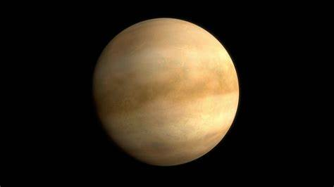
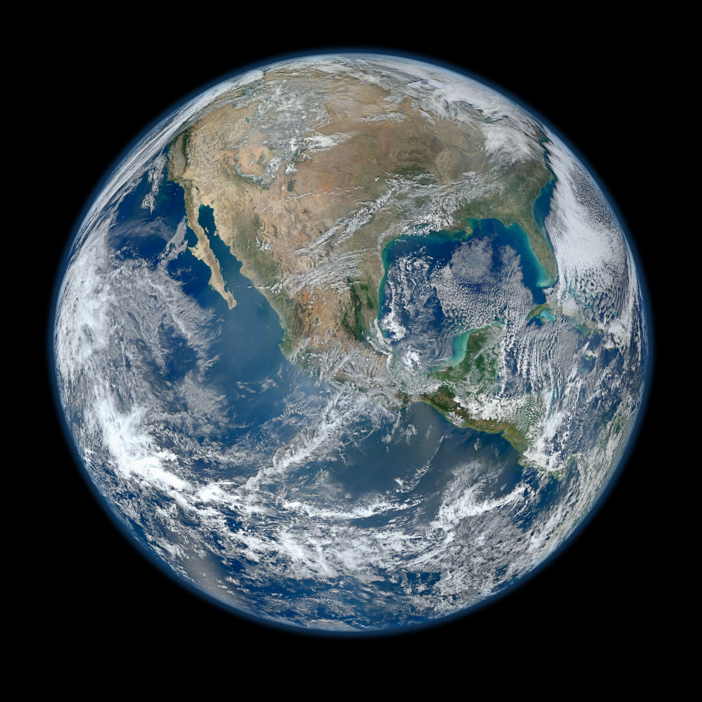
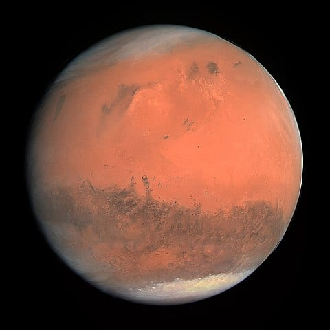
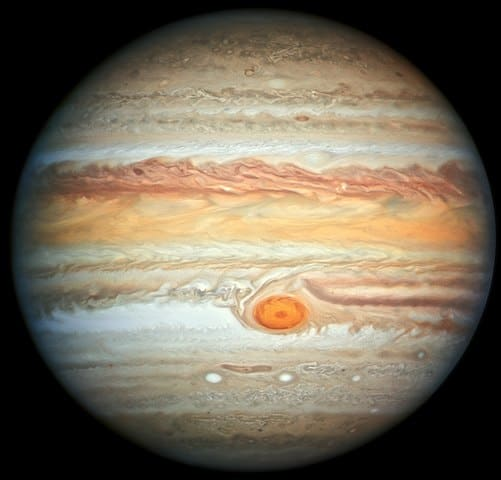
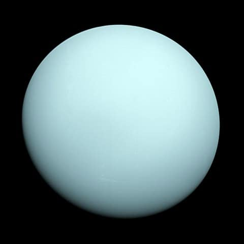
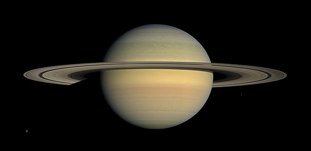
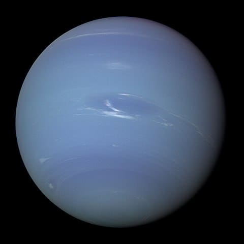

Mercury
Mercury is the first planet from the Sun and the smallest in the Solar System. In English, it is named after the ancient Roman god Mercurius (Mercury), god of commerce and communication, and the messenger of the gods.Moreover, mercury is classified as a terrestrial planet, with roughly the same surface gravity as Mars.The surface of Mercury is heavily cratered, as a result of countless impact events that have accumulated over billions of years. It has huge diameter of 1,550 km (960 mi), which is one-third diameter of the planet.

Venus
Venus is the second planet from the Sun and is often referred to as Earth's closest planetary neighbor. It has a thick atmosphere composed mostly of carbon dioxide, with clouds of sulfuric acid, making it the hottest planet in our solar system, with surface temperatures reaching up to 900°F (475°C). Venus is similar in size to Earth, with a diameter of about 12,104 km, and it does not have any moons or rings. The planet has been explored by numerous spacecraft, with NASA's Mariner 2 being the first to fly past it in 1962.
Earth
The third closest planet to the Sun. Earth is at an average distance of 150 million km / 93 million mi or 1 AU away from the Sun. It only has one moon and several other smaller satellites. Earth is the biggest terrestrial planet having a diameter of 12.760 km. Surface temperatures on Earth are around 14 degrees. Around 70% of Earth’s surface is covered in water, while the atmosphere is made out of 78% nitrogen, 21% oxygen,etc .It has a dynamic atmosphere, which sustains Earth's surface conditions and protects it from most meteoroids and UV-light at entry.
Mars
The fourth terrestrial planet and closest celestial body to the Sun. Mars is 228 million km / 142 million mi or 1.52 AU distance away from the Sun. Also known as the Red Planet due to its reddish hue primarily because of its iron oxide on its surface, Mars is very similar to Earth. It has two moons, Phobos and Deimos.Like Earth, it has volcanoes, valleys, deserts, and polar ice caps. The rotational period and tilt are also very similar to Earth with one day lasting 24 hours and 37 minutes, while a year is equivalent to 687 Earth days.
Jupiter
The fifth and most massive planet of the Solar System. Jupiter is 778 million km / 484 million mi or 5.2 AU away from the Sun. It is 317 times more massive than Earth and 2.5 times larger than all the other planets combined.Jupiter is a gas giant; it is primarily composed of hydrogen, helium, and other gases. Its atmosphere is the most intense in the Solar System. Probably second only to Uranus in terms of wind speeds which can reach up to 100 m/s or even more. Jupiter has a diameter of 142.984 km / 88.846 mi.One year on Jupiter is the equivalent of 12 Earth years.
Uranus
The seventh planet from the Sun, the ice giant Uranus. Uranus is 2.9 billion km / 1.8 billion mi or 19.19 AU away from the Sun. It is classified as an ice giant due to the presence of ammonia, methane, water, and hydrocarbons in ice form.The presence of methane causes its bluish hue. It also has a ring system though it is very faint. It is the coldest planet of the Solar System with temperatures at around -224 degrees Celsius.Currently, 27 moons have been confirmed to orbit around Uranus. The diameter has been estimated at 51.118 km / 31.763 mi.
Saturn
The sixth planet from the Sun, and also a gas giant. Saturn is 1.4 billion km / 886 million mi or 9.5 AU distance away from the Sun. Seven ring systems surround it.The gas giant has been recently crowned as the king of the moons since it has 82 confirmed satellites. Its atmosphere is made up of hydrogen, helium, and other gases.Saturn’s diameter has been estimated to be at around 120.500 km / 74.900 mi. A year on Saturn is the equivalent of 30 Earth years, while a day lasts 10.7 hours.The average temperatures on Saturn are around -178 degrees Celsius.
Neptune
The farthest planet, Neptune. It lies at around 4.5 billion km / 2.8 billion mi or 30.07 AU away from the Sun. Like Uranus, it is also an ice giant.It has a series of faint planetary rings, around 14 confirmed moons, and it has the fastest wind speeds of any planet, reaching speeds of 2.160 km / 1.314 mi per hour. One day on Neptune lasts 16 hours, while a year is equivalent to 165 Earth years, the longest of any planet. Neptune is the fourth-largest planet having a diameter of around 49.244 km / 30.598 mi.It is the first planet discovered through mathematical calculations and predictions.
